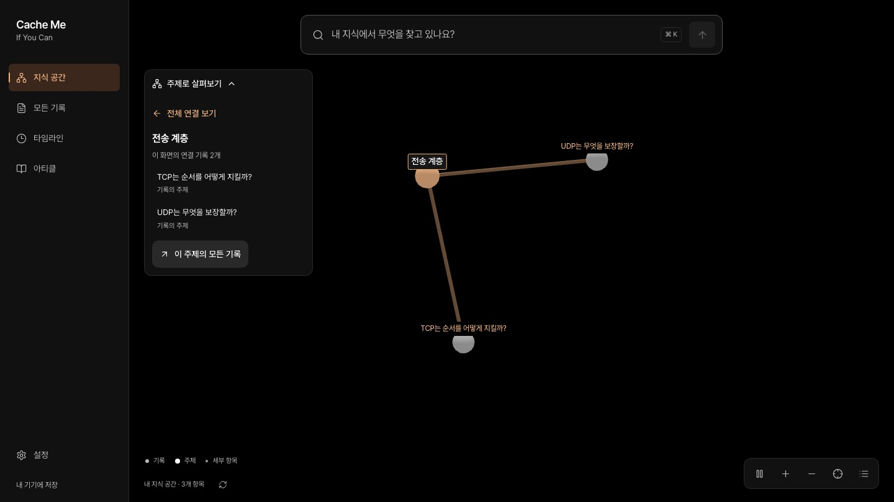

예전에 공부한 내용이 가물가물해요.
날짜, 주제, 질문 중 기억나는 단서로 기록을 찾아보세요.
심화 가이드
TCP와 UDP를 공부하고 남긴 두 기록. 같은 주제로 이어지는 과정부터 답변의 출처가 되는 순간까지, 궁금한 곳에서 시작하세요.

날짜, 주제, 질문 중 기억나는 단서로 기록을 찾아보세요.
인용 번호에는 당시 읽은 저장본과 구간이 연결됩니다.
단어, 의미, 주제에서 나온 후보를 모으는 과정을 따라가 보세요.
기록과 아티클이 어떤 도구를 거쳐 저장되는지 확인하세요.
로컬 저장소, 외부 모델 호출, 백업 파일의 범위를 살펴보세요.